Prologue
What is in the box?
Our data is the 30,000 Spotify Songs dataset, pulled from the Spotify Web API with the spotifyr R package. Each row is a track that appeared in a genre playlist, with its popularity score (0–100), its release date and ten audio features that Spotify computes from the sound itself.
The first thing to know is that this is not a random sample of Spotify. The genres were collected in roughly equal amounts, as the six waffle charts below show.
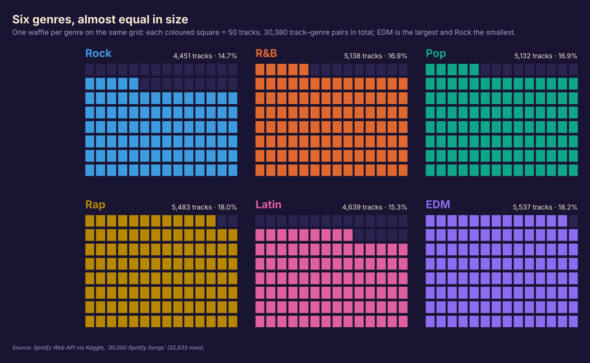
Each genre was itself assembled from four sub-genre playlists, from permanent wave to big room. We will need this hierarchy when we ask what makes a genre sound like itself.
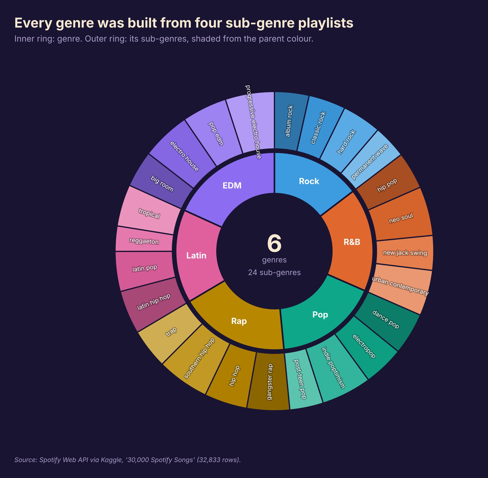
Finally, the ten numbers themselves. Danceability, energy and valence are roughly bell-shaped. Instrumentalness, speechiness, acousticness and liveness are piled up near zero, and loudness and duration use different units entirely. This is why we compare features with rank-based statistics (Spearman correlation, percentiles) instead of raw values.
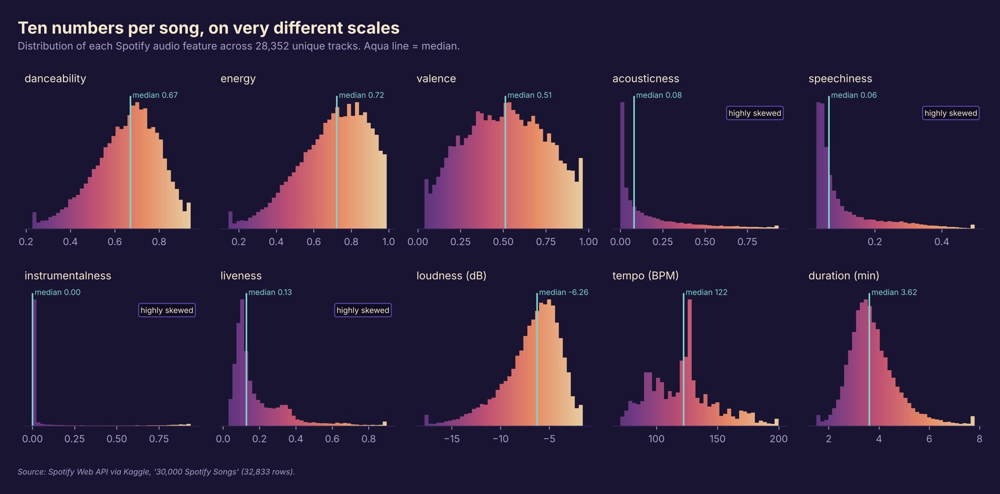
Chapter 1 · Question 1
Which genres are the most popular?
Pop comes first and EDM comes last. But the averages hide most of the story.
Pop has the highest mean popularity, followed by Latin and Rap. EDM trails clearly behind. The ridgeline shows the full distributions, and two things stand out. Every genre has a spike of tracks at zero, which are delisted or unrated songs. And the spread inside each genre is far wider than the gaps between genres.
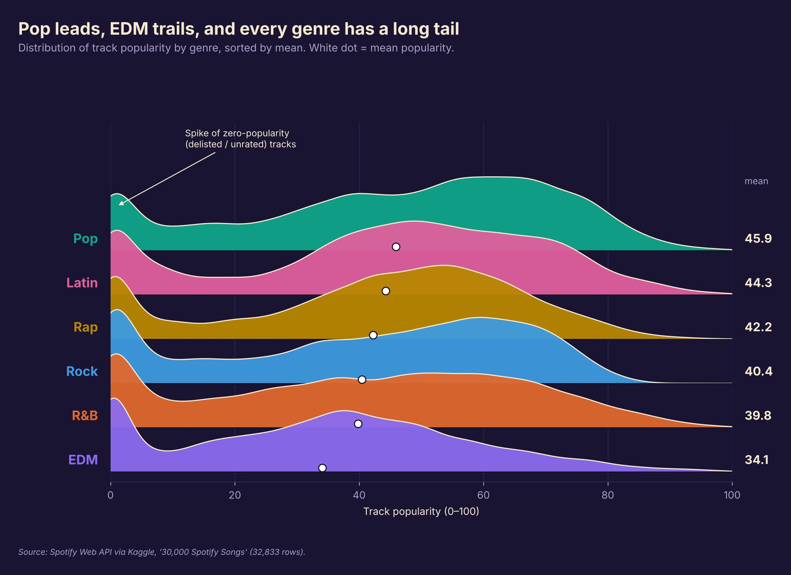
An average cannot tell us which genre produces hits. This Marimekko chart, a homage to the Reuters graphic we rebuilt in Lecture 5, sets each bar's width to the genre's share of the dataset and splits its height into popularity tiers. Pop and Latin put the most tracks in the peach “Hit” band (70+). EDM has the fewest hits and the most zeros.
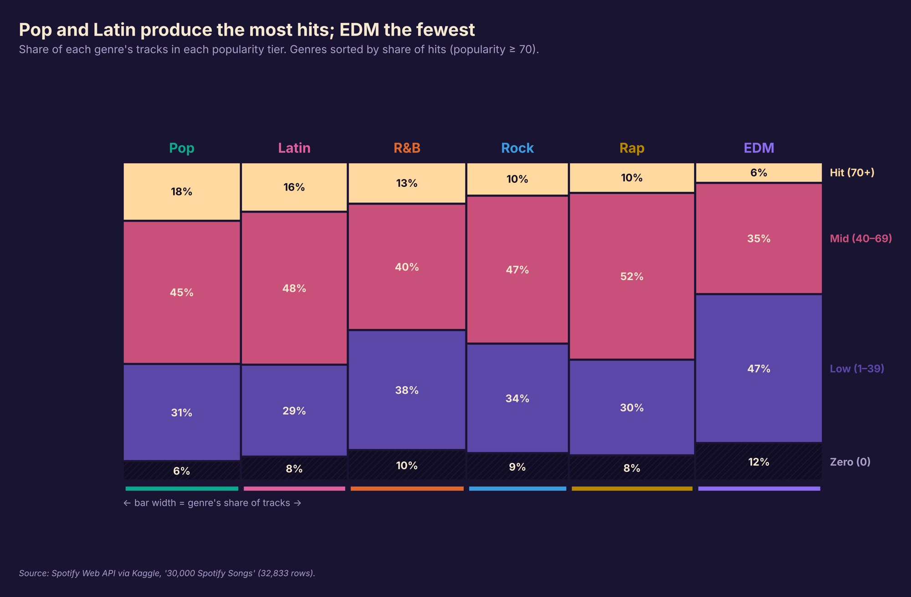
Chapter 2 · Question 2
Does a hit have a sound?
Not one that Spotify's audio features can measure.
We correlated each feature with popularity across 25,736 tracks (leaving out the zeros). We set the axis to ±0.5 on purpose, so that no bar looks larger than it is. Every correlation falls in or near the “negligible” zone. The strongest is instrumentalness at −0.17: songs without vocals tend to be a little less popular.
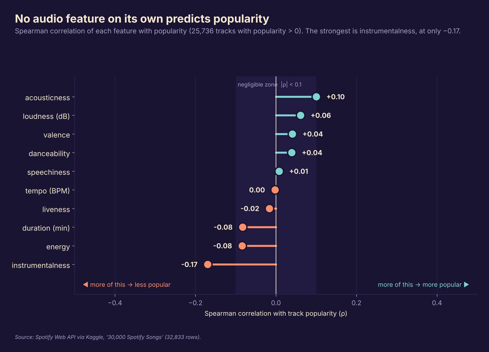
A correlation looks at one feature at a time. Could hits have a distinctive combination of features? The radar compares the average percentile of each feature for hits (70+) and for low-popularity tracks (1–30). The two shapes overlap on almost every spoke. The clear exception is that hits are much less instrumental, and they are also a little shorter and more acoustic.
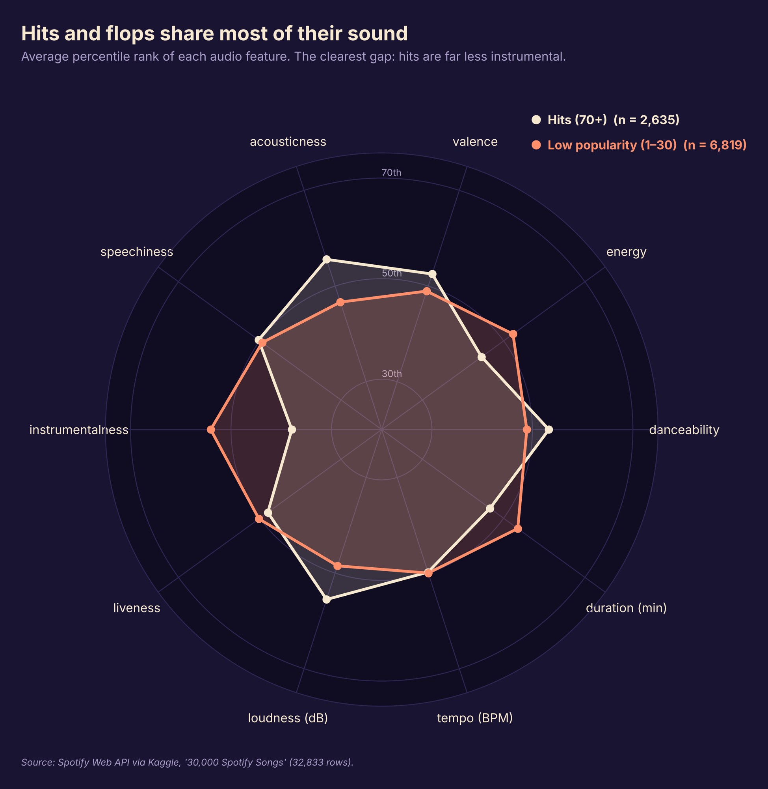
Chapter 3 · Question 3
What makes a genre sound like itself?
Here the same ten numbers suddenly tell a lot.
Group the tracks by genre instead of by popularity, and the radar shapes pull apart. Try it yourself: switch genres on and off and hover over a spoke to read the values.
Values are average percentile ranks (0–100) within the dataset. The dashed ring marks the dataset average (50th percentile).
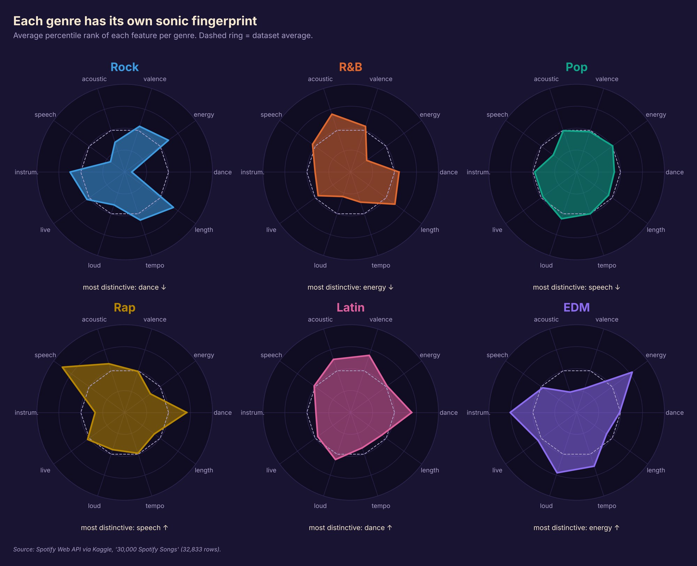
The proposal also asked about sub-genres. We clustered all 24 using sound alone, with no genre labels. All four Rock sub-genres end up on one branch, and three of the four EDM sub-genres on another. R&B, Rap, Latin and Pop sub-genres mix together, though: hip hop sits next to neo soul, and latin hip hop next to new jack swing.
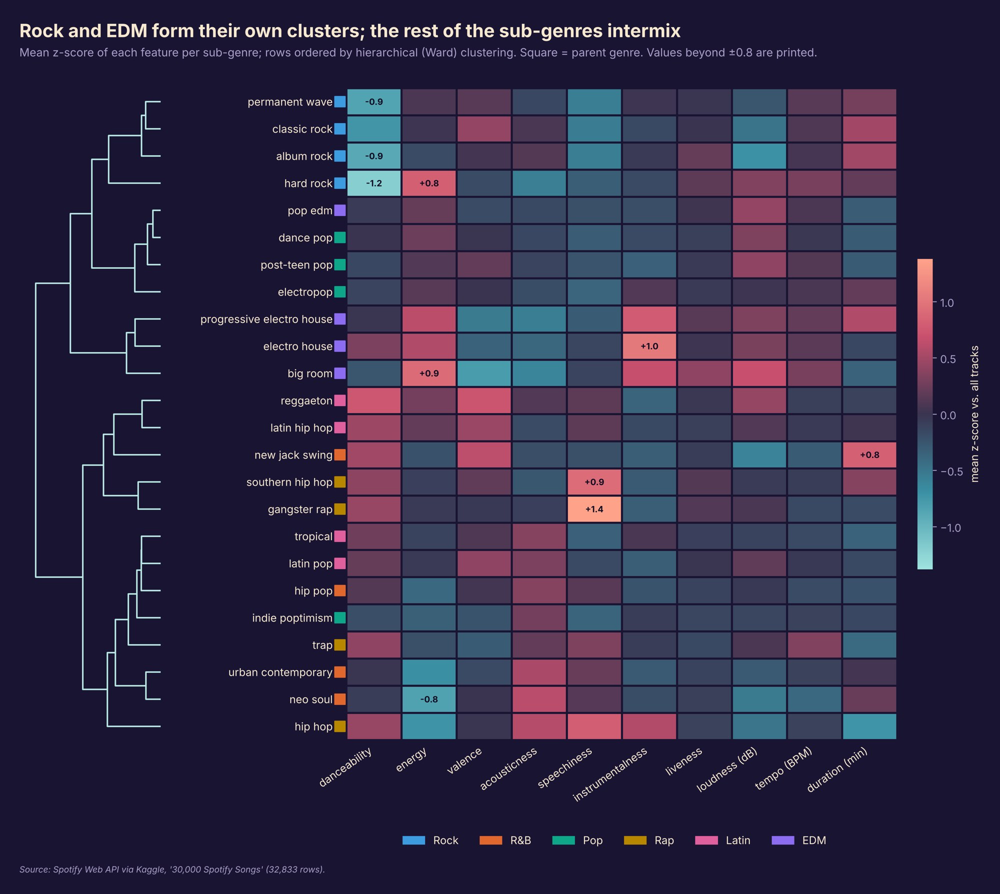
To measure how well the features separate genres, we trained a random forest to predict genre from the ten features. It gets 52% right, against about 17% by guessing. Shuffling one feature at a time shows which ones the model relies on most: danceability, tempo and speechiness.
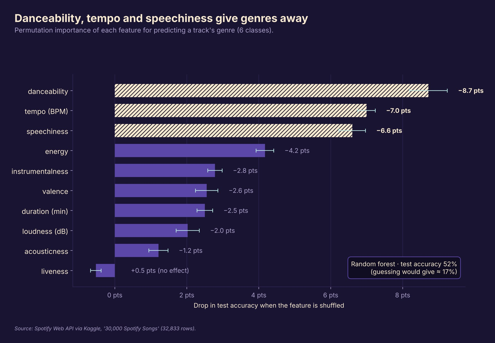
Where the model goes wrong is informative too. Rock is recognised 72% of the time, EDM 66% and Rap 65%. Pop is right only 29% of the time, and its tracks leak into every other genre: in terms of sound, Pop is close to the average of everything. The thickest single ribbon is R&B mistaken for Rap (295 tracks), which matches the hip-hop flavour that the two genres share.
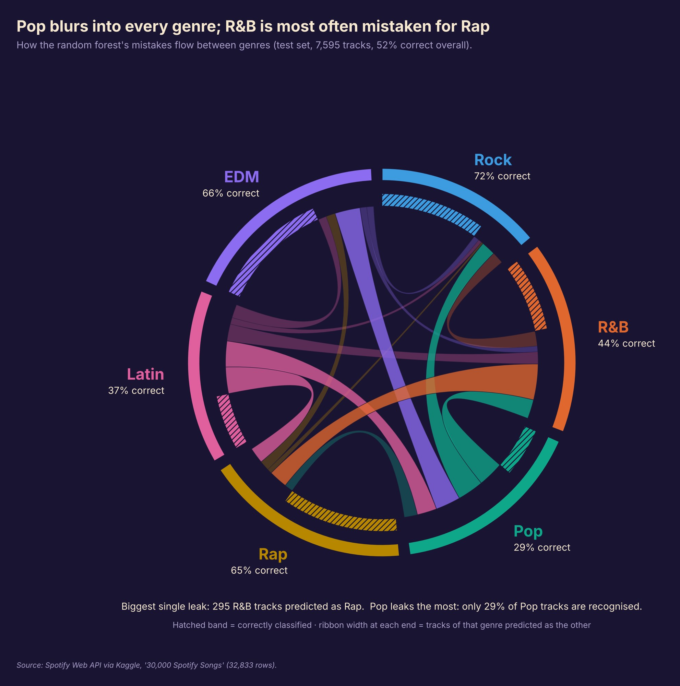
Chapter 4 · Question 4
Has music become sadder?
Yes, in the 2010s, and inside every genre.
Average valence (musical positivity) held at about 0.60 for decades and then fell to about 0.46 by 2015–19. Energy did not fall with it. In this sample, songs got gloomier without getting calmer.
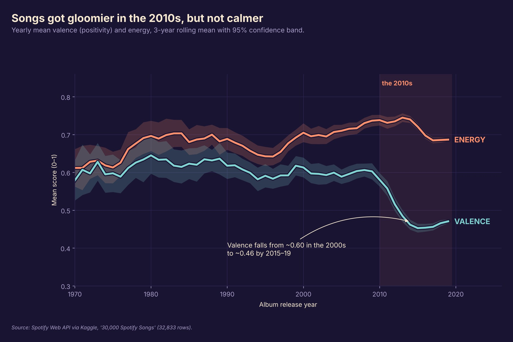
Before we can trust that, we have to check a confounder. Old tracks in this sample are mostly Rock, while the 2010s add EDM, which has the lowest valence of any genre (0.41). A change in the genre mix alone could pull the average down.
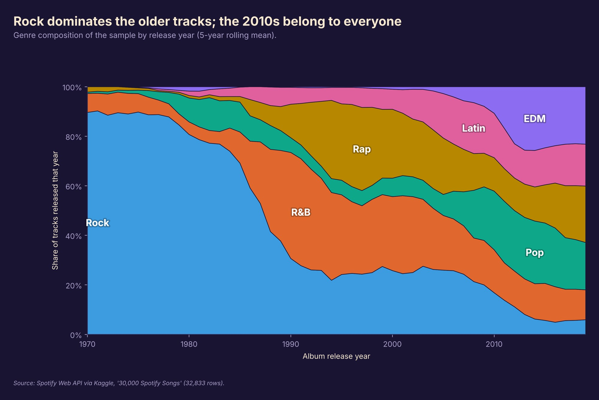
So we redrew valence within each genre. It falls in all six: by 0.08 in Rock and by up to 0.19 in EDM. The darker mood is real and not only an artefact of the changing mix.
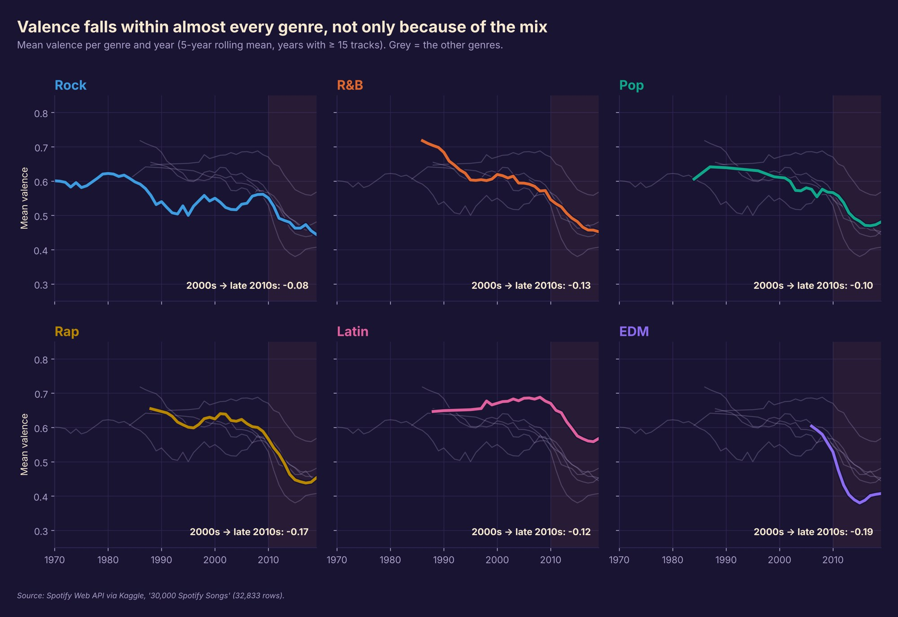
Chapter 5 · Question 5
Does a faster song make you dance more?
Only up to a point.
Mean danceability rises up to about 90 BPM, plateaus at about 0.70 through the “dance zone” of 90–125 BPM, and then declines for faster songs. Two bright columns show genre conventions: about 95 BPM for hip-hop grooves and 128 BPM for house and EDM. Because the relationship rises and then falls, the overall correlation is weak (ρ = −0.17).
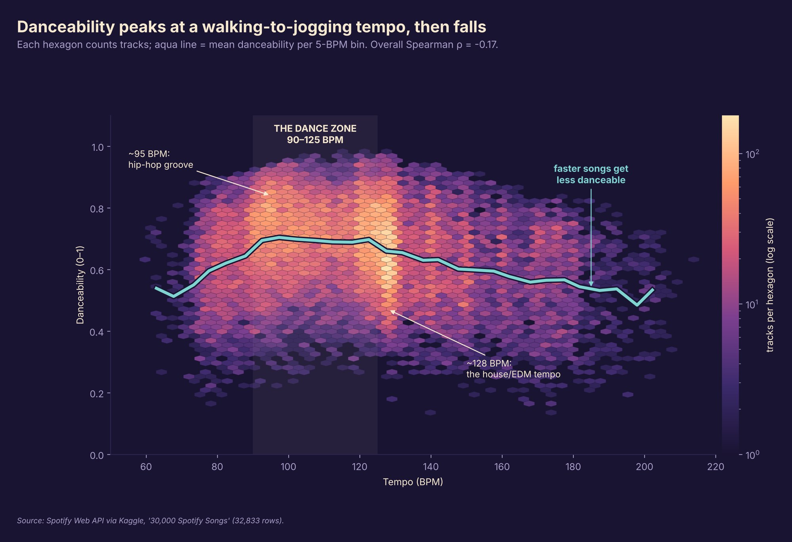
Epilogue
Five takeaways
- Q1
Pop leads, EDM trails in popularity, but the spread inside every genre is much larger than the gaps between them.
- Q2
No audio feature makes a hit. Every correlation with popularity is |ρ| < 0.2, and hits sound much like flops.
- Q3
Genres have clear fingerprints. Danceability, tempo and speechiness give a genre away; Rock is easy to recognise and Pop is the average of everything.
- Q4
Music got gloomier in the 2010s, with valence falling inside all six genres, while energy stayed high.
- Q5
Danceability peaks at 90–125 BPM and falls for faster songs.
Spotify's audio features capture what a genre sounds like, and how music's mood has darkened, but they say surprisingly little about what makes a song popular.
Methods & notes
- Data: 30,000 Spotify Songs (Kaggle; collected with
spotifyr), 32,833 rows. 5 rows without names were dropped. Tracks listed in several playlists were de-duplicated: genre analyses use one row per (track, genre) pair (30,380), and track-level analyses use one row per track (28,352). - Popularity is Spotify's 0–100 score at collection time (2020). Q2 excludes tracks with popularity 0.
- Time trends use album release years 1970–2019.
- Model: random forest (300 trees), stratified 75/25 split, permutation importance with 10 repeats.
- Code: every figure is produced by
spotify_soundscape.ipynb(Python, Matplotlib). This page uses only HTML, CSS and JavaScript. - Limitations: playlist-based, genre-balanced sampling; audio features are Spotify's own black-box estimates.